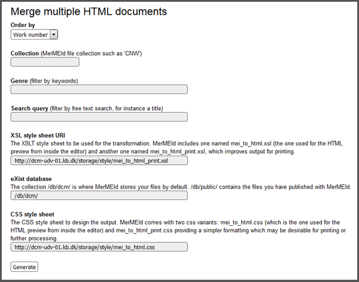

Displaying or printing multiple (or all) records
When working on a catalogue of works, you will probably want to review or print all of the relevant records at some point.
For this purpose MerMEId includes a script that allows you to merge the HTML output from a number of files. You should find the script in the 'merge' folder in your eXist database, i.e. here: merge_settings.xq.
You should see the following form. It includes basic instructions and suggests default settings in some of the fields:

Fill in the form to define which files to select and click the 'Generate' button to generate the merged HTML output.
You may point to XSLT and CSS style sheets anywhere as long as the script can access them.